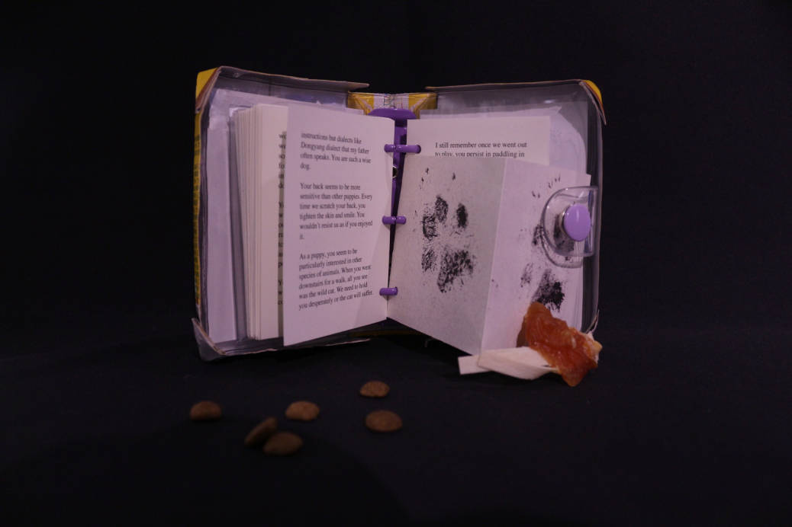
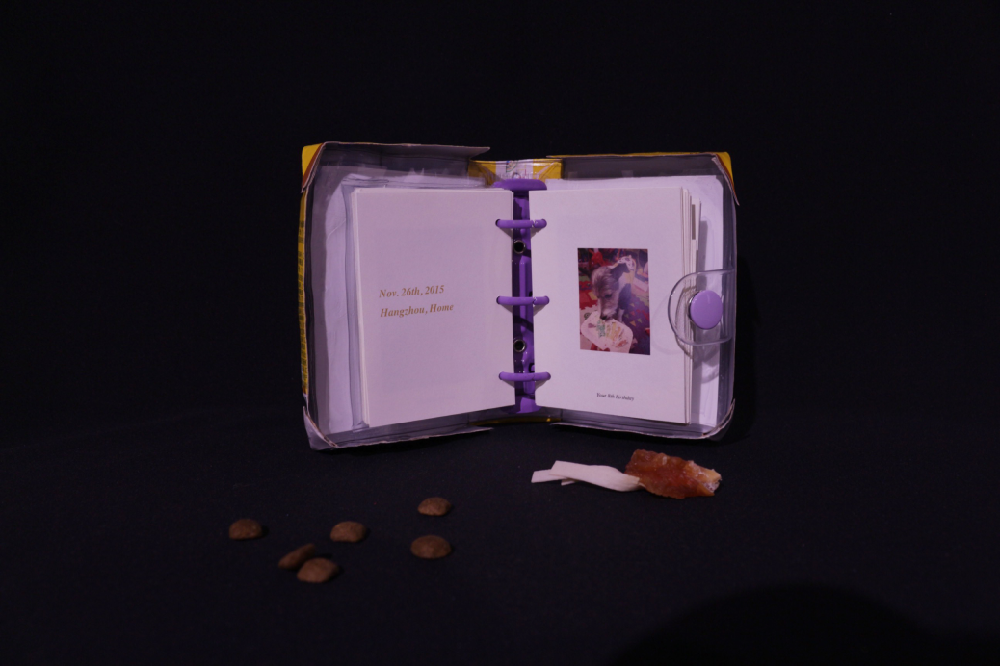
 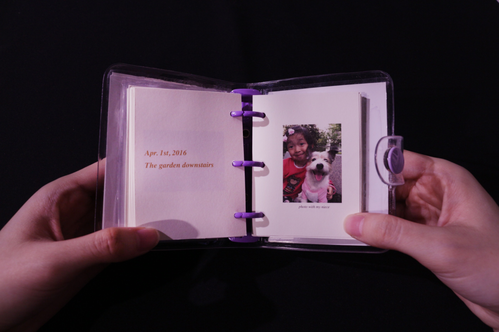
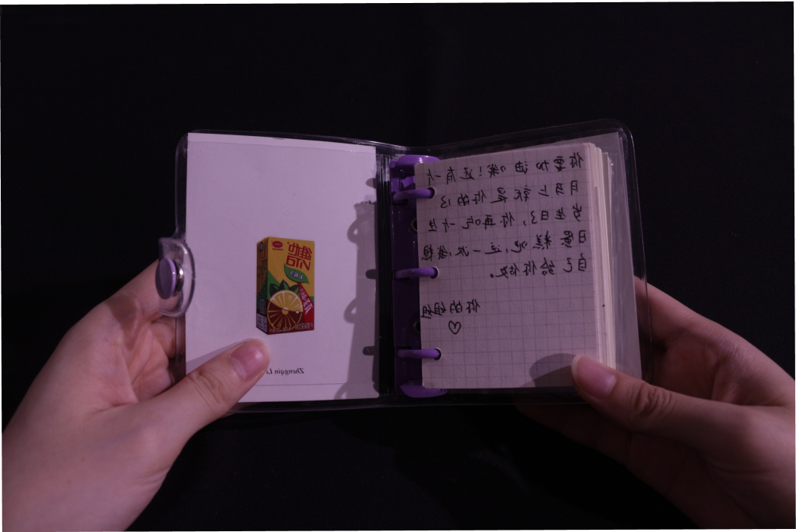
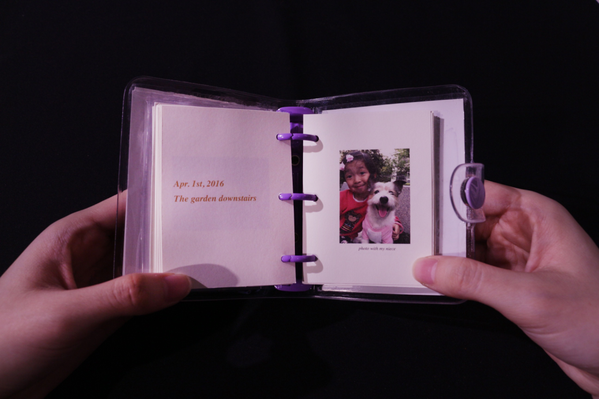
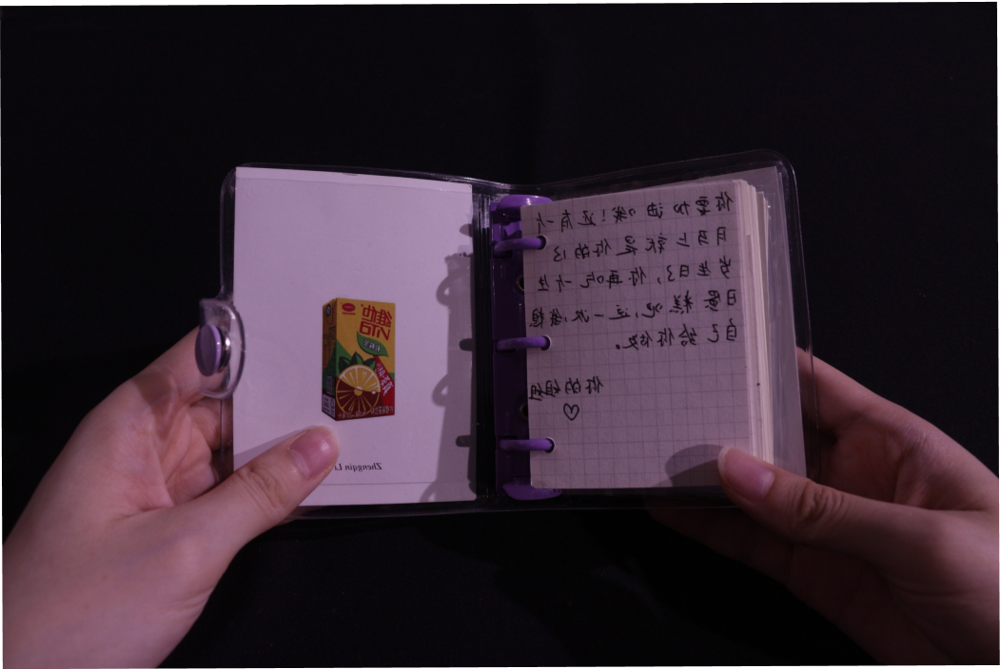
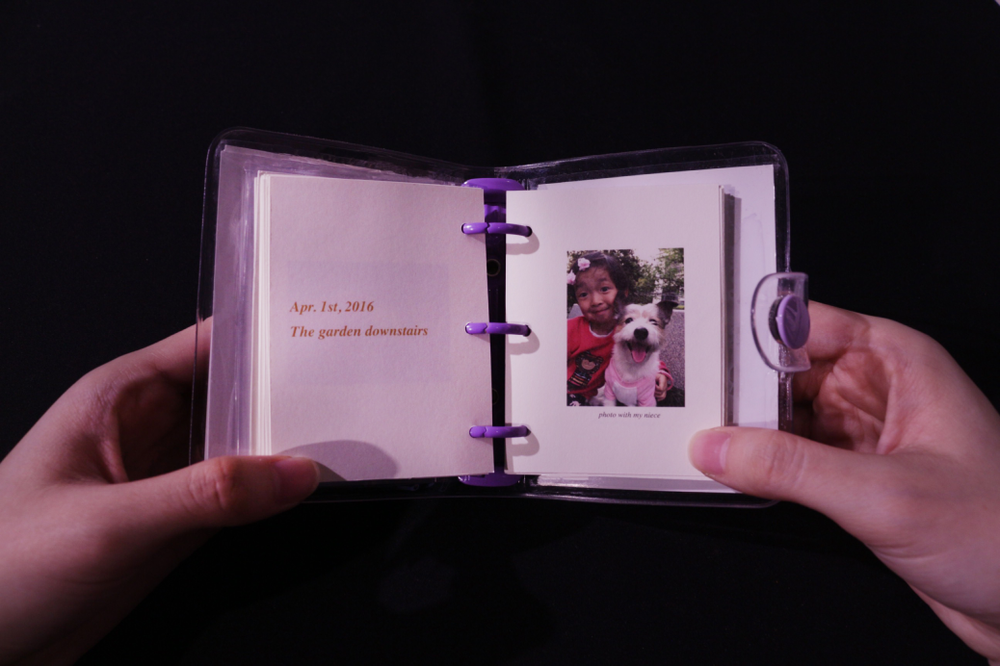
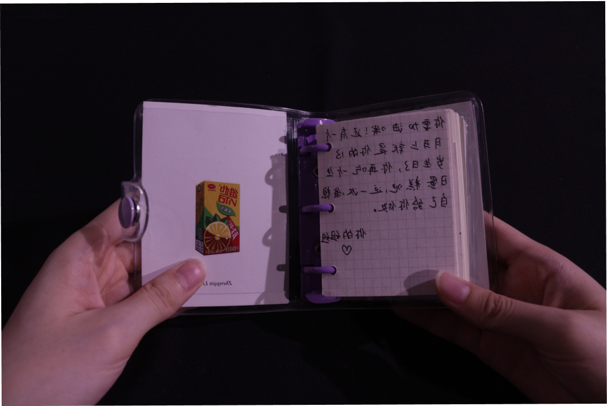
Anniversary
2020
The inspiration for this project comes from my dog-DuoDuo, a dog who has been with me for 10 years. Due to illness, DuoDuo has recently suffered tremendously, which makes me think about companionship and farewell in life. I sorted out the bits and pieces between me and Duoduo, and made a book design "Remembrance" that combined materials. This design process brought me a lot of positive energy. I also hope that my design can convey love and being loved. The life issues of need and need help more owners who need to face the same problems.
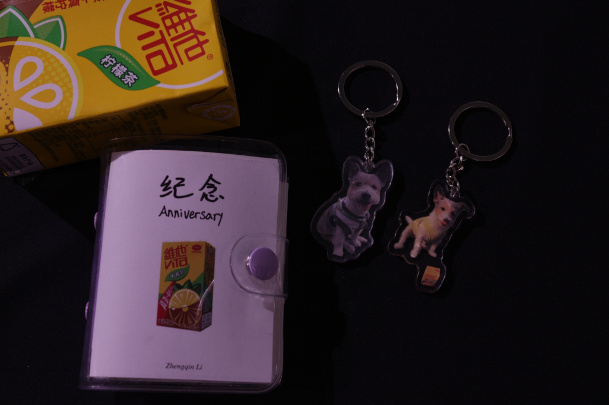
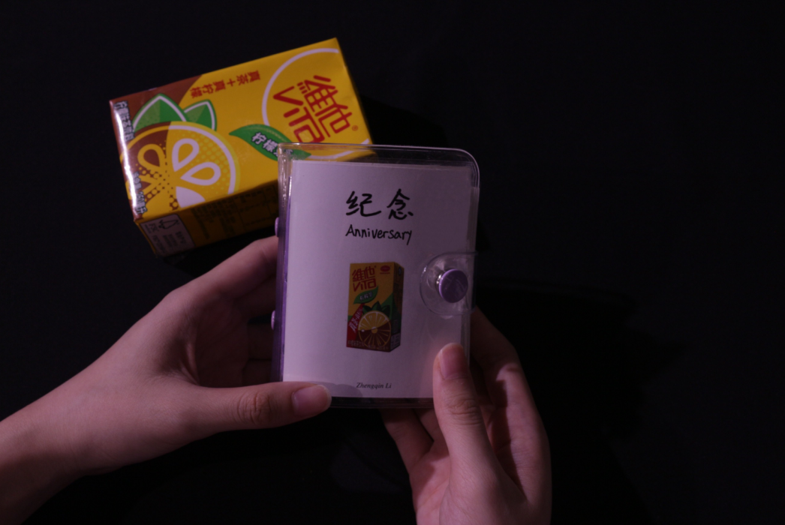
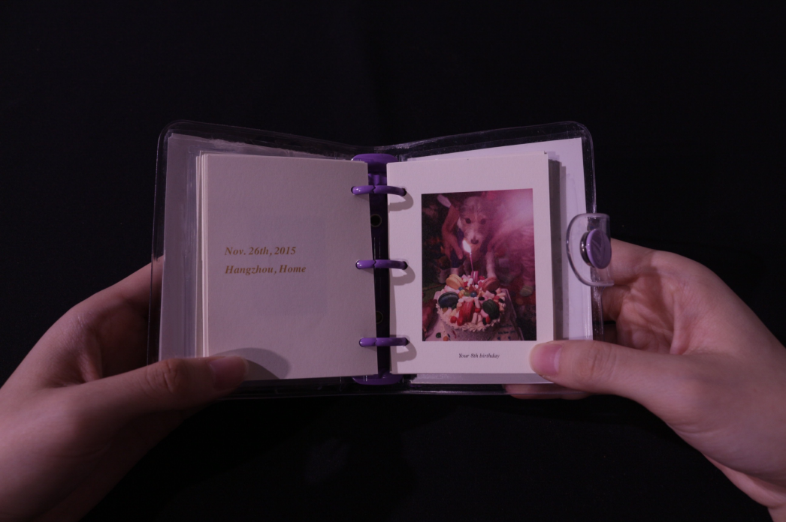